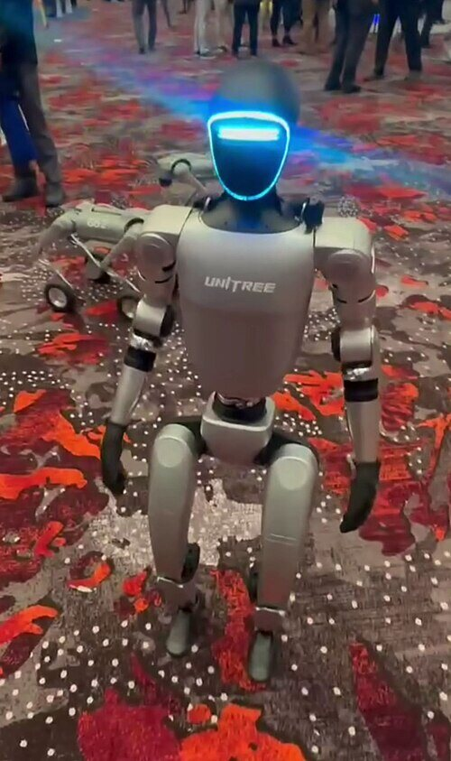

Vu pour toi · 19 novembre 2026
Un robot qui apprend tous les gestes — en trois heures
Une infolettre a parlé de SuperMimic. J'ai vérifié à la source, et voici
l'essentiel : un humanoïde qui imite à peu près n'importe quel mouvement humain,
entraîné en trois heures sur un seul GPU, là où il fallait avant des jours
entiers sur une centaine de machines. Explications sans jargon, puis ce que tu peux
voir de tes propres yeux.
Publié le 20 octobre 2026 · accepté à CoRL 2026 (conférence de robotique, Berkeley) ·
vérifié le 19 novembre 2026 à la source (page du projet, article scientifique).
Pressé ? La version en une minute →

C'est bien lui : le Unitree G1, le robot humanoïde de 1,27 m utilisé par SuperMimic
(35 kg, 23 à 43 articulations selon la version). Photo prise au salon UAV Expo 2024
par Sayanesy, domaine public (CC0) —
fichier d'origine sur Wikimedia Commons.
Ce n'est pas une image du projet SuperMimic lui-même.
3 h
d'entraînement sur 1 seul GPU — une carte graphique professionnelle
≥ 1000×
moins de calcul que la référence précédente, qui avait exigé 7 jours sur 128 GPU
0
mouvement raté sur 129 514, après 9,8 h sur 2 GPU
D'abord, de quoi on parle ?
Un humanoïde, c'est un robot qui a un tronc, deux bras et deux jambes, avec
des articulations à peu près comme les nôtres (coude, épaule, hanche, genou).
Le plus connu aujourd'hui s'appelle Unitree G1 — c'est lui qu'on voit dans
la plupart des vidéos de ce projet.
Le problème, avec ce genre de machine, c'est de lui faire faire des gestes naturels :
marcher, bien sûr, mais aussi s'asseoir par terre, faire une roulade, un salto arrière,
une danse. Chaque geste est un petit casse-tête, et la méthode classique consiste
à entraîner le robot geste par geste, longuement, avec d'énormes moyens
de calcul.
SuperMimic fait autrement : un seul entraînement, qui apprend la façon dont
un corps tombe, glisse, se rattrape et se redresse — puis s'en sert pour imiter
toute une bibliothèque de mouvements humains filmés.
L'idée, en une image
Imagine que tu veuilles apprendre à un enfant à jongler. Deux méthodes.
Avant
Le vrai gymnase
Tu le fais essayer pour de vrai, des milliers de fois. Chaque essai coûte du temps,
et il faut un vrai gymnase. C'est très fidèle — c'est la réalité — mais c'est
extrêmement lent et très cher. C'est grosso modo la méthode des roboticiens
jusqu'ici.
SuperMimic
La tête, d'abord
Tu commences par lui faire observer beaucoup d'essais pour comprendre
les lois du mouvement — ce qui tombe, ce qui glisse, ce qui rebondit.
Une fois qu'il a ces lois « dans la tête », il s'entraîne dans son imagination,
qui va plus de dix fois plus vite que le simulateur. Et il ne va dans le vrai
gymnase que pour vérifier.
Les chercheurs appellent cette « tête » un modèle du monde (world model) :
une petite mécanique apprise qui prédit l'état suivant du robot — position, vitesse,
contact avec le sol — sans passer par le simulateur physique complet.
Comment ça marche, en trois temps
Tout se passe dans une boucle, répétée encore et encore. Trois étapes, et on recommence.
-
Il essaie, pour de vrai.
Le robot exécute des mouvements dans un simulateur physique classique
(MuJoCo), qui calcule les contacts et les chutes honnêtement. Tout ce qui se passe
est enregistré : ce qu'il a tenté, ce qui en est résulté.
C'est la seule partie « lente ». Elle fournit la matière première.
-
Il en tire des lois.
Avec ce qu'il a enregistré, il ajuste son modèle du monde : une mécanique
apprise qui devine la suite d'une situation. Plus il l'alimente, plus la prédiction
est juste — et l'étude montre que cette justesse reste stable même avec 264 heures
de mouvements dans l'estomac.
-
Il s'entraîne dans sa tête.
Le voilà qui rejoue des scènes dans son modèle, à toute vitesse, et qui
corrige sa façon de bouger pour mieux suivre le mouvement humain visé. Le simulateur
n'est plus dans la boucle : c'est ce qui rend l'apprentissage si rapide.
Point important, et un peu contre-intuitif : le simulateur n'est jamais
« différentié ». Autrement dit, les chercheurs n'ont pas eu besoin d'un simulateur
spécial, aux contacts lisses et artificiels. Un simulateur standard, avec ses contacts
rugueux, suffit. C'est ce qui rend la méthode réutilisable.
Ce que ça donne, dans l'ordre
Sur la page du projet,
il y a un film de quelques minutes. Voici ce qu'on y voit, et dans quel ordre —
tu peux le regarder en sachant à quoi t'attendre.
-
Un robot seul sur un sol clair.
Le G1, debout, immobile. Puis il part : marche, demi-tour, petit saut.
-
Les gestes compliqués arrivent.
Roulades sur le côté, salto arrière de 360°, sauts en longueur, jambes croisées,
danse. Le même programme, sans réglage spécial pour chaque geste.
C'est la partie spectaculaire — et celle où la référence précédente échouait.
-
Le robot tombe exprès.
On lui coupe les commandes : il s'effondre. Le modèle du monde, lui, avait
prévu la chute — la prédiction colle à ce qui arrive vraiment.
-
Le sol devient glissant.
On baisse la friction sous ses pieds, en pleine course. Ses pieds glissent,
le modèle du monde le sait, et la politique s'adapte. C'est là qu'on voit à quoi
sert d'avoir « compris » la physique plutôt que de l'avoir apprise par cœur.
-
La comparaison, côte à côte.
Le geste de référence (le film d'un humain), puis l'ancienne méthode, puis
SuperMimic. Sur les saltos et les roulades, l'ancienne méthode tombe — systématiquement.
-
Et enfin, le vrai robot.
Tout ce qui précède a été entraîné dans un simulateur. La dernière partie
montre le vrai G1, en métal, qui exécute les mêmes gestes, sans réglage
particulier. C'est le moment le plus impressionnant : ce qui a été appris
« dans la tête » fonctionne dans le monde réel.
Les chiffres, honnêtement
Ce sont les chiffres annoncés par les auteurs, dans l'article et sur la page du projet.
Je les recopie sans les arrondir en ma faveur — et avec leur contexte, qui compte.
| Ce qui est comparé | La référence (SONIC) | SuperMimic |
|---|
| Machines | 128 GPU L40 | 1 GPU H100 |
| Durée | 7 jours (168 h) | 3 h |
| Calcul total | ≈ 21 000 GPU-heures | ≈ 3 GPU-heures |
| Mouvements ratés (sur 129 514) | 179 | 25 à 3 h · 0 à 9,8 h sur 2 GPU |
| Données de mouvement utilisées | 611 h | 264,56 h |
| Méthode | essais-erreurs dans le simulateur | calcul des gradients à travers le modèle du monde |
Deux précautions que les auteurs prennent eux-mêmes : l'ancienne méthode utilisait
2,3 fois plus de données, et les cartes ne sont pas les mêmes (une H100 n'est
pas une L40). Ça n'explique pas un écart de mille fois — mais ça fait partie de la
photo. Autre précision : les 129 514 mouvements servent aussi à l'entraînement.
Le chiffre mesure donc la couverture, pas la capacité à faire un geste jamais vu.
Ce que ça ne veut pas dire
C'est le genre d'annonce qu'on a envie de prendre pour une révolution complète.
Quelques réserves, pour garder la tête froide :
-
Ce n'est pas un robot de maison. Le G1 est un matériel de recherche
coûteux, il ne fait pas la vaisselle, et le projet ne prétend rien de tel.
Ce qui progresse, c'est la façon d'apprendre des mouvements.
-
« Trois heures sur un GPU » ne veut pas dire « sur ton PC ».
Il s'agit d'une carte professionnelle (H100), et il faut aussi le simulateur,
les données de mouvement et le savoir-faire. Ce n'est pas un logiciel qu'on
installe le dimanche.
-
Le code est libre, la démo ne l'est pas. Le code source est publié sous licence
Apache 2.0 — on peut le lire, le réutiliser, le modifier. Mais la démonstration web
(le petit robot manipulable dans le navigateur) est explicitement
propriétaire : visible et utilisable sur place, pas copiable ni réutilisable.
-
Le chiffre « 0 échec » a son périmètre. 129 514 mouvements, une seule
tentative chacun, sols et conditions fixés par le protocole. C'est très sérieux,
ce n'est pas la vie réelle dans une cuisine encombrée.
Voir soi-même — trois choses, dans cet ordre
Tu n'as rien à installer, rien à télécharger, aucun compte à créer.
Trois liens suffisent.
-
Le film.
C'est le plus parlant. Une vidéo de quelques minutes, sans commentaire technique.
-
La page du projet.
Les chiffres, les graphiques, les questions-réponses des auteurs — et les
vidéos courtes par geste (saltos, roulades, sauts en longueur).
-
La démo interactive — si elle charge.
Un robot en 3D dans le navigateur. On peut choisir un mouvement, couper
la politique (il tombe), ou glisser le robot à la souris pour le déstabiliser.
Il faut un ordinateur récent et une bonne connexion : la démo pèse lourd et
compile plusieurs secondes. Si l'écran reste sur « compiling… », ce n'est pas
ta faute — réessaie plus tard ou passe par le film.
Quatre mots, pour ne pas se perdre
- Humanoïde
- Robot à forme humaine : tronc, deux bras, deux jambes, articulations comparables aux nôtres.
- GPU
- Une carte graphique. Au départ pour les jeux vidéo ; aujourd'hui, le muscle qui fait tourner l'apprentissage des modèles d'IA. Une H100 est une carte professionnelle, très chère.
- Modèle du monde
- Une mécanique apprise qui devine ce qui va se passer juste après, à partir de l'état actuel. Elle remplace le simulateur pendant l'entraînement, en beaucoup plus rapide.
- Politique
- Le programme qui décide, à chaque instant, quel ordre envoyer aux moteurs. C'est lui qu'on entraîne, et c'est lui qu'on met dans le vrai robot.
À retenir en une phrase
Avant, apprendre à un robot tous les gestes humains demandait des jours sur
une centaine de machines ; maintenant, quelques heures sur une seule —
et le vrai robot, en métal, fait quand même les saltos.
Où j'ai vérifié
Tout ce qui précède vient de trois endroits, consultés le 19 novembre 2026 :
-
La page du projet — supermimic.github.io :
les chiffres, les comparaisons, les vidéos et les questions-réponses des auteurs.
-
L'article scientifique — arXiv:2610.28480,
« SuperMimic: Scaling Humanoid Whole-Body Control with One Differentiable World Model »,
Qiayuan Liao et six coauteurs, Berkeley — accepté à CoRL 2026 (présentation orale).
-
Le code — publié par les auteurs sous licence Apache 2.0, Python uniquement,
mis à jour le jour même. Il s'obtient depuis la page du projet ci-dessus.
L'infolettre qui m'a mis sur la piste pointait vers une page de suivi de liens.
Toutes les adresses ci-dessus ont été ouvertes directement : ce sont les sources
d'origine, pas des reprises.
Page de veille du tableau de bord — elle accompagne l'étape « Voir SuperMimic de mes yeux »
du projet Découverte de logiciels IA.
Écrite le 19 novembre 2026, vérifiée à la source le même jour.
Confidentialité : cette page n'a aucun script de suivi, aucun cookie, aucune police distante.
Les liens vers le projet SuperMimic s'ouvrent dans un nouvel onglet (comme tout lien externe) :
une fois là-bas, ce sont les règles du site de Berkeley qui s'appliquent, pas les nôtres.
Image : photo du Unitree G1 par Sayanesy (UAV Expo 2024), domaine public CC0, via
Wikimedia Commons
— réduite et recadrée pour cette page. Ce n'est pas une image du projet SuperMimic.